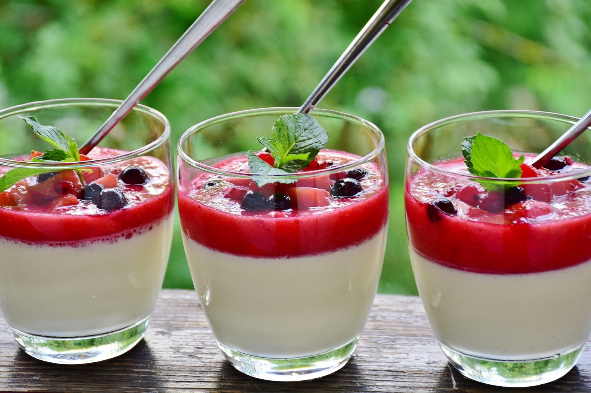

Back to Menu
Panna Cotta

Panna Cotta is a desert originating from Italy reminescent of puding. It's a very simple and quick desert to prepare at home.
Ingredients
Heavy cream, 300 ml
Gelatine sheets, 2
Sugar 100g
Vannila extract, 1 teaspoon
Jam and fruits for decoration and finish
Recipe
Add the cream into a pot and heat it up.
Prepare a bowl with tap water and insert the sheets of gelatine.
Once the cream starts boiling immedietly lower the heat and insert the soaked sheets of gelatine.
Let the gelatine dissolve in the cream and add sugar and any flavouring you like (vannila extract).
Once the gelatine is fully disolved pour it into cups or other containers in which it will be served.
Let it sit over night in the fridge. Once the desert is fully solid add jam and decorate with fruits.